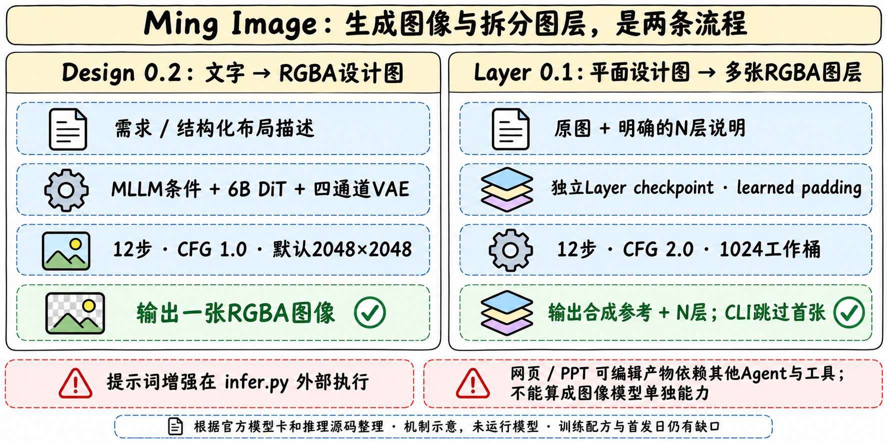
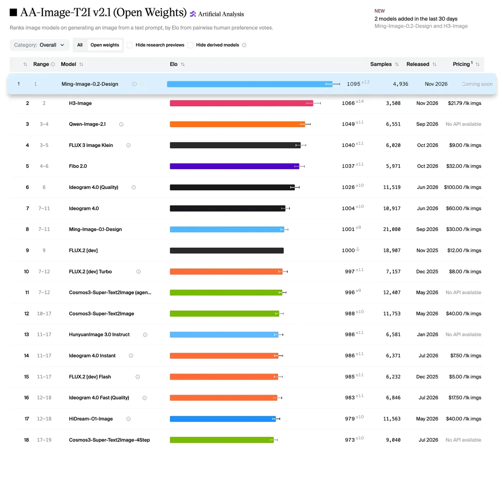

Ming Image — 把可生成、可分层与可编辑工作流分开

模型族、开放与材料时间
| 项目 | 官方材料 | 边界 |
|---|---|---|
| Design 0.2 | 新版视觉设计生成，DiT 6B，当前可下载 | 构图、光照和文字改进为官方定性声明；没有逐项受控消融 |
| Design 0.1 | 旧版设计生成，DiT 6B | 9月UI/UX细分类第一不等于当时总榜第一 |
| Layer 0.1 | 独立分层模型，DiT 6B | 返回RGBA层，与Design的单图生成不同 |
| 新分层升级 | 卡片称细到角色部件 | 当前公开列表仍只有0.1-Layer；0.2-Layer不列为已开放权重 |
| 许可 | 当前三卡/代码MIT | 以官方许可原件为准，不把第三方素材权利一并推定 |
| 版本固定 | GitHub d5615110e3ae7d27f270eafe5556d669b2069971；HF 0.2为3538f4c311cf8f5256d631ddb7f47793f741aa2e | main会变；本轮归档这些版本下的源码、配置和官方原图 |
HF 0.2权重包上传记录2026-11-25 12:52:53 UTC，首个可见模型卡13:18:10 UTC；GitHub展示0.2的提交为11/25 17:14:39 UTC（北京11/26 01:14:39）。它们说明对应内容何时进入历史，不能排除仓库此前私有。AA图的月份支持月份归档，不支持把具体上传日直接定为公开首发。
架构：6B以外还有哪些模块
| 模块 | 已归档配置 | 解释 |
|---|---|---|
| MLLM语言骨干 | BailingMoeV2，20层、hidden2048、16 query/4 KV heads；256路由专家、top8与1共享；vocab157184 | 该子模块并非6B DiT；max_position_embeddings32768不是本轮实测服务上下文 |
| 视觉侧 | Qwen2.5 ViT类，32层、hidden1280、patch14、merge2 | preprocessor min/max_pixels均451584；参考图预处理尺度和最终2K输出不同 |
| Connector | Qwen2型，28层、hidden1536、12 heads/2 KV heads | config dtype float32与整体BF16设置分别记录，不把静态字段当最终所有张量精度 |
| MLP/条件 | VLM direct条件与learnable token条件；选hidden层5/12/20；cap维2560、DiT内部3840 | 不能从这些连接推断训练时各模块冻结/更新配方 |
| DiT | 官方6B；30层、hidden3840、30heads、2 refiner层、输入16 latent通道、patch2 | 这里的16通道是latent，与图像RGBA四通道不矛盾 |
| VAE | AutoencoderKLQwenImage，input_channels4，z_dim16，scale8.0064、shift0 | 参考编码要求latent分布mode(argmax)，不是随机sample |
| 调度器 | FlowMatchEulerDiscreteScheduler，配置train_timesteps1000、shift6 | generator源码随后强制dynamic_shifting=True，不能只抄配置中的false |
diffusion/pipeline.py按latent网格计算image_seq_len；达到4096时把max_image_seq_len设为当前长度、max_shift1.35，否则4096/1.15，再计算mu传set_timesteps，sigma_min=0。1000是调度参数，不是训练步数；12是推理采样步数，也不是12步训练。
两条推理契约与尺寸策略
| 契约 | Design generation/edit | Layer decomposition |
|---|---|---|
| alignment_padding_mode | zero_masked | learned |
| multi_frame_output | false | true |
| VAE/参考编码 | 四通道、argmax | 四通道、argmax |
| 默认steps / CFG | 12 / 1.0 | 12 / 2.0 |
| 默认工作尺度 | 2048；支持1024/2048桶 | 1024；支持512/1024桶 |
| 输入与输出 | T2I不能有参考图，num_layers必须1；image-edit需参考图 | 必须参考图；根据明确N层说明生成N+1张，首张为合成参考 |
| 实际保存 | 单张RGBA PNG | CLI跳过第一张，保存独立layer_01等 |
parse_num_layers优先匹配“Decompose this image into N layers”，再读“Number of layers: N”，解析不到时退回5；不等同于模型自主发现正确层数。CLI会检查返回张数，Layer必须恰好N+1。任务schema能支持image-edit不代表已验证所有编辑质量或宣传中的新分层效果。
T2I的width/height必须同时给出，不能和resolution并用，宽高比限1:4–4:1；按面积平方根选择最近1024或2048内部桶（并列取较小值），再选内部aspect bucket，最后需要时Lanczos resize到请求尺寸。官方给2560×1440、2432×1824、1664×2496等例子；请求尺寸不等于原生每像素都在该尺寸生成。分层则按工作桶计算但保持输入图比例。
部署口径
官方已验证最低配置为一张80GiB CUDA GPU、BF16；这是指定实现的配置，不是实测最低显存或吞吐保证。默认MLLM eager，FlashAttention2可选，sdpa对LLM会在加载时报错，DiT内部仍用PyTorch SDPA，二者不能混为一谈。balanced映射为GPU0预留视觉/扩散固定模块并拆分MLLM，严格检查可见GPU数与声明匹配、layer设备和fixed module设备。
归档requirements精确固定torch2.4.0、transformers4.57.1、diffusers0.36.0、accelerate1.13.0，注释称9/16已验证；config还出现dev版本字符串。这不是本轮重建验证。源码有validate-only与smoke/contract tests入口，但我们没有执行可能触发HF下载的推理命令。应另建隔离环境、固定所有权重哈希后再测，不把“可读源码”写成“复现成功”。
提示词增强与Agent工作流
生成PE要求严格JSON：canvas_settings只含aspect_ratio/ambient_lighting/image_style，layers每层含description、coordinates、hierarchy_and_relation、color_specs；coordinates是一条归一化cx/cy/w/h字符串而非对象。用户要求渲染的字符串逐字保留，每段文字仅有一个owner，前后Z-order明确，布局完整枚举，避免隐藏“其余文字”。这是一种接口约束，不保证模型每次遵守。
分层PE先接收用户粗略层计划，严格保留层数与角色，Layer1最前，文字前置，承载文字的card/panel在后且独立，主物体独立，背景最后吸收其余支撑面；再生成CLI能解析的层说明。把一张图拆开不保证层重组等于原图、透明边缘正确或所有文字仍可编辑。
Ling UI Design、Image-to-Editable-PPT是另外的Agent工作流。RGBA图层仍是像素，不是原生SVG、HTML DOM或PowerPoint文本框；网页代码、版式修复与文字转原生元素需要其他Agent/工具完成。
评测：榜单快照与分层原表

| 官方快照行 | Elo及图示误差 | Samples | 读法 |
|---|---|---|---|
| Ming-Image-0.2-Design | 1095 ±12 | 4936 | 截图Open weights Overall第一，非全市场总榜第一 |
| H3-Image | 1066 ±14 | 3508 | 不能仅靠单次点估计承诺所有任务更优 |
| Qwen-Image-2.1 | 1049 ±11 | 6551 | 榜单人类偏好不等于文字精确率或可编辑性 |
| FLUX 3 Image Klein | 1040 ±11 | 6020 | 成本、延迟、硬件并非同条件 |
| Ming-Image-0.1-Design | 1001 ±9 | 21080 | 同快照较旧版高94点，不是受控训练消融 |

原图标题为Crello测试集，最后一行名称是CLEAR-1024 (Ours)，README将其作为0.1-Layer结果图展示。本轮未取得把CLEAR训练版与已开放checkpoint逐权重对齐的证据，因此下面保留原名，不能改名为0.2 Design的分层分数。MLM=允许的最大layer merge数0–5，合并越宽松，任务越容易；L1越小越好、alpha soft IoU越大越好。
| 方法（原图名称） | RGB L1：MLM0/1/2/3/4/5 | Alpha soft IoU：MLM0/1/2/3/4/5 |
|---|---|---|
| VLM Base + Hi-SAM | .1197/.1029/.0892/.0807/.0755/.0726 | .5596/.6302/.6860/.7222/.7465/.7589 |
| Yolo Base + Hi-SAM | .0962/.0833/.0710/.0630/.0592/.0579 | .5697/.6537/.7169/.7567/.7811/.7897 |
| LayerD | .0709/.0541/.0457/.0419/.0403/.0396 | .7520/.8111/.8435/.8564/.8622/.8650 |
| Qwen-Image-Layered-I2L † | .0594/.0490/.0393/.0377/.0364/.0363 | .8705/.8863/.9105/.9121/.9156/.9160 |
| Qwen-Image-Layered-I2L-640 ‡ | .1481/.1192/.0982/.0947/.0886/.0880 | .7131/.7713/.8418/.8524/.8649/.8672 |
| Qwen-Image-Layered-I2L-1024 ‡ | .1409/.1064/.0854/.0799/.0742/.0736 | .7177/.7772/.8467/.8573/.8728/.8749 |
| CLEAR-1024 (Ours) | .0574/.0359/.0343/.0320/.0317/.0314 | .8923/.9288/.9362/.9406/.9416/.9424 |
†原图注明官方版未开源且用Crello训练集微调。‡为官方开源版本，分别640与1024分辨率。训练暴露、分辨率、提示增强与merge容许度都影响可比性；不能用这张表推出0.2每项任务领先。
训练缺口与可转化实验
尚缺预训练语料/规模/过滤、合成样本比例、SFT/RL或蒸馏配方、优化器/LR/步数/算力、奖励与裁判、0.1→0.2受控消融、榜单原始投票及去污染、0.2-Layer权重、首次公开日和独立复现。源码中的train_model命名、requires_grad接口、scheduler字段不证明官方训练实际按某方案执行。示例动画只说明可展示的案例，不证明普遍成功率。
第一手材料与关联
- 当前官方0.2模型卡、0.1 Design、0.1 Layer。
- 官方源码固定版本；原始README、推理代码、profile、padding、调度器、配置、测试及官方原图保存在src/。
- 旧版官方博客本轮为环境验证，未将验证页当正文；官方X候选访问403，公告内容与日期未用二手转述替代。
- 关联：Nemotron-Labs-Image；Nemotron-Labs-VisionCode；Qwen-Image-2.1。
📊 中文 Poster：ming_image_poster_zh.html